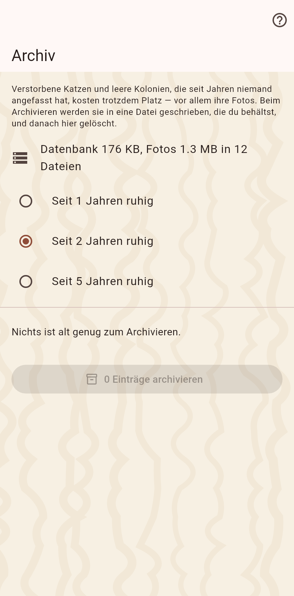

Alte Daten kosten Platz, vor allem die Fotos, die jedes abgleichende Gerät mitschleppt. Hier wählst du, was seit Jahren ruht, schreibst es in eine Datei, die du behältst, und löschst es.

Verstorbene Katzen und leere Zuhause, die niemand in der gewählten Zeit angefasst hat, als Liste von Optionen, wie lange das Archiv wartet. Die Datei enthält alles über sie, Fotos eingeschlossen.
Ein Moment wird festgehalten, die Datei geschrieben, die Datensätze gelöscht. Das Löschen erreicht alle, mit denen du abgleichst; der Import der Datei stellt alles wieder her.